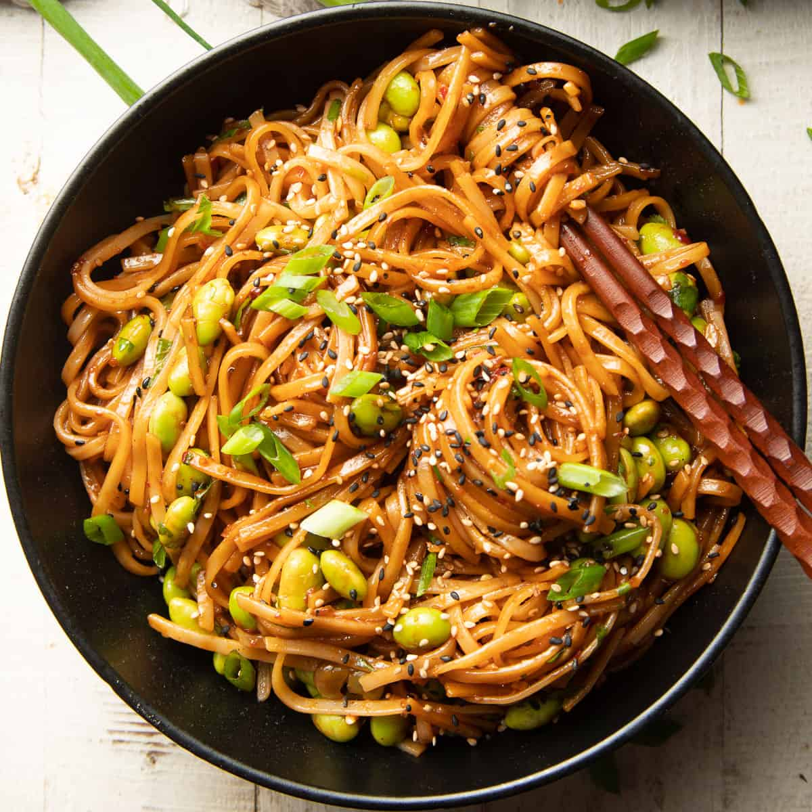

CHILLI GARLIC MAGGIE

Description
Chilli Garlic Maggie is a fiery and flavorful take on classic instant noodles. With a zesty blend of red chillies and garlic, these noodles are cooked to perfection and tossed in a spicy chili garlic sauce. The result is a deliciously bold and aromatic dish that adds an exciting twist to your noodle experience, perfect for spice enthusiasts seeking a quick and satisfying meal.
Ingredients
- 1 packet Maggie Masala
- 40g Garlic Butter
- 3-4 Garlic Cloves
- Half Chopped Small Onion
- 2 spoon Soya Sauce
- 2 1/2 spoon Red Chilli Sauce
- Vegetables of your choice
Steps
- Boil the noodles in a pot, excluding the masala, and drain the water.
- In a pan, melt butter and sauté garlic and onions.
- Add soya sauce and red chilli sauce to the pan.
- Mix in the Maggie masala thoroughly.
- Introduce your preferred vegetables and cook for 1-2 minutes.
- Combine the boiled noodles with the flavorful mixture in the pan, ensuring an even mix.
- Serve hot and enjoy your delicious dish.